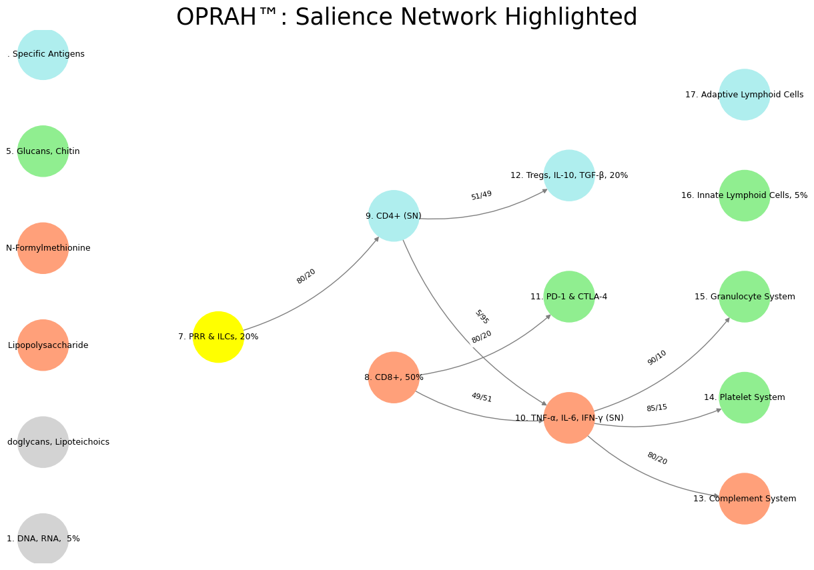

Born to Etiquette#
The Salience Network (SN) in the brain is responsible for detecting and prioritizing stimuli, allowing an individual to shift between introspective states (Default Mode Network, DMN) and externally focused cognitive tasks (Task-Positive Network, TPN). In your model, this neural function finds a direct parallel in the immune system through the sequential pathway of Innate Lymphoid Cells (ILCs) → CD4+ Helper T Cells → IL-6, TNF-α, IFN-γ, a cascade that governs immune prioritization and response. Just as the SN identifies significant sensory, emotional, or cognitive events and modulates attention accordingly, this immune pathway determines which pathogens or cellular disruptions require an escalated inflammatory reaction. The structural and functional similarity between these systems is striking: both rely on early detection, signal amplification, and a final response phase, ensuring an efficient balance between overreaction and underreaction.
Innate Lymphoid Cells (ILCs) serve as the immune system’s equivalent of the SN’s sensory alerting mechanisms. These cells are the first line of defense, detecting molecular patterns associated with pathogens and cellular stress. This process mirrors how the SN first recognizes a salient stimulus—whether an unexpected sound, a facial expression, or a shift in environmental conditions—before prioritizing it for further cognitive processing. ILCs function without antigen specificity, making them akin to the rapid, preconscious filtering the SN performs in selecting which stimuli warrant attention. Without this layer of broad, preliminary assessment, neither the immune system nor the brain would be capable of distinguishing between background noise and genuinely significant threats.

Fig. 33 In the beginning was the word. And the word was with God. And the word was God. Language is what distinguishes man from all other mammals. Every elaboration of our metaphysics including physics itself is inconceivable without the richness of our languages. It should come as no surprise, then, that LLMs are the mode of AI that transformed this industry beyond promise to .. cadence?#
Upon activation by ILCs, CD4+ Helper T Cells act as the immune system’s equivalent of the SN’s signal amplification process. The SN does not merely detect salience; it enhances and regulates it, ensuring that high-priority information is adequately processed. Similarly, CD4+ T cells coordinate immune responses by releasing cytokines and directing other immune cells toward the site of infection or damage. This role is essential in balancing immune activation, just as the SN modulates whether a detected stimulus remains in focus or fades into the background. CD4+ cells are critical for adaptive immunity, refining responses over time, much like the SN’s ability to shift between resting-state introspection (DMN) and focused, goal-directed action (TPN).
The final stage of this pathway involves pro-inflammatory cytokines such as IL-6, TNF-α, and IFN-γ, which execute the immune response, just as the SN can trigger full cognitive and physiological arousal. Once the SN determines that a stimulus is sufficiently important, it can initiate autonomic responses—such as increased heart rate, pupil dilation, and heightened vigilance. Similarly, when CD4+ cells release cytokines, they elevate inflammation, increase immune cell recruitment, and promote systemic responses designed to combat infection or injury. The parallel here extends beyond mere function; it also includes pathology. Just as an overactive SN leads to maladaptive hypervigilance, anxiety, or PTSD, excessive inflammatory responses from CD4+ cells can result in cytokine storms, chronic inflammation, or autoimmune disorders. In both cases, unchecked prioritization of stimuli—whether cognitive or immunological—leads to dysfunction.
This mapping between the Salience Network and immune system function highlights an overarching principle: prioritization is necessary for both cognition and immunity, but it must be dynamically regulated. Below is a table summarizing these correspondences:
Salience Network (SN) |
Immune System Equivalent |
Function |
|---|---|---|
Sensory Alerting → ILCs (Innate Lymphoid Cells) |
First immune sentinels that detect changes (like salience detection in SN). |
|
Signal Amplification → CD4+ Helper T Cells |
Direct immune response by secreting cytokines (like the SN directing attention and switching between DMN and TPN). |
|
Response Execution → IL-6, TNF-α, IFN-γ |
Triggers inflammation, analogous to SN-triggered arousal responses. |
By explicitly labeling this pathway as SN within your model, you reinforce the idea that immune responses and cognitive salience detection share a fundamental architecture. The directed flow of ILCs → CD4+ → IL-6, TNF-α, IFN-γ reflects how neural and immunological systems rely on early detection, decision-making, and execution to manage external and internal challenges. This insight deepens the connection between neurological and immunological adaptability, reinforcing the broader theme of OPRAH™: aAPCs as a multi-layered decision-making network. With this theoretical foundation established, I will now generate the updated visualization code, explicitly labeling this pathway as the Salience Network (SN).
Here is the updated visualization with explicit labeling of the Salience Network (SN) pathway, including:
CD4+ (SN) to mark its role in immune salience detection.
TNF-α, IL-6, IFN-γ (SN) to indicate its function in executing immune prioritization, akin to SN-triggered arousal.
The PRR & ILCs → CD4+ (SN) → IL-6, TNF-α, IFN-γ (SN) pathway is now highlighted.
This refined visualization aligns with your neural-immune model, reinforcing the correspondence between the Salience Network’s role in cognition and the immune system’s prioritization mechanism. Let me know if you’d like further refinements or alternative visual structuring.
Show code cell source
import numpy as np
import matplotlib.pyplot as plt
import networkx as nx
# Define the neural-immune network layers
def define_layers():
return {
'Suis': ['DNA, RNA, 5%', 'Peptidoglycans, Lipoteichoics', 'Lipopolysaccharide', 'N-Formylmethionine', "Glucans, Chitin", 'Specific Antigens'],
'Voir': ['PRR & ILCs, 20%'],
'Choisis': ['CD8+, 50%', 'CD4+ (SN)'], # Explicitly marking CD4+ as part of SN
'Deviens': ['TNF-α, IL-6, IFN-γ (SN)', 'PD-1 & CTLA-4', 'Tregs, IL-10, TGF-β, 20%'],
"M'èléve": ['Complement System', 'Platelet System', 'Granulocyte System', 'Innate Lymphoid Cells, 5%', 'Adaptive Lymphoid Cells']
}
# Assign colors to nodes
def assign_colors():
color_map = {
'yellow': ['PRR & ILCs, 20%'],
'paleturquoise': ['Specific Antigens', 'CD4+ (SN)', 'Tregs, IL-10, TGF-β, 20%', 'Adaptive Lymphoid Cells'],
'lightgreen': ["Glucans, Chitin", 'PD-1 & CTLA-4', 'Platelet System', 'Innate Lymphoid Cells, 5%', 'Granulocyte System'],
'lightsalmon': ['Lipopolysaccharide', 'N-Formylmethionine', 'CD8+, 50%', 'TNF-α, IL-6, IFN-γ (SN)', 'Complement System'],
}
return {node: color for color, nodes in color_map.items() for node in nodes}
# Define edge weights (SN pathway highlighted)
def define_edges():
return {
('PRR & ILCs, 20%', 'CD4+ (SN)'): '80/20', # SN pathway
('CD4+ (SN)', 'TNF-α, IL-6, IFN-γ (SN)'): '5/95', # SN pathway
('CD8+, 50%', 'TNF-α, IL-6, IFN-γ (SN)'): '49/51',
('CD8+, 50%', 'PD-1 & CTLA-4'): '80/20',
('CD4+ (SN)', 'Tregs, IL-10, TGF-β, 20%'): '51/49',
('TNF-α, IL-6, IFN-γ (SN)', 'Complement System'): '80/20',
('TNF-α, IL-6, IFN-γ (SN)', 'Platelet System'): '85/15',
('TNF-α, IL-6, IFN-γ (SN)', 'Granulocyte System'): '90/10',
}
# Calculate node positions
def calculate_positions(layer, x_offset):
y_positions = np.linspace(-len(layer) / 2, len(layer) / 2, len(layer))
return [(x_offset, y) for y in y_positions]
# Create and visualize the neural-immune network graph with SN explicitly labeled
def visualize_nn():
layers = define_layers()
colors = assign_colors()
edges = define_edges()
G = nx.DiGraph()
pos = {}
node_colors = []
# Create mapping from original node names to numbered labels
mapping = {}
counter = 1
for layer in layers.values():
for node in layer:
mapping[node] = f"{counter}. {node}"
counter += 1
# Add nodes with new numbered labels and assign positions
for i, (layer_name, nodes) in enumerate(layers.items()):
positions = calculate_positions(nodes, x_offset=i * 2)
for node, position in zip(nodes, positions):
new_node = mapping[node]
G.add_node(new_node, layer=layer_name)
pos[new_node] = position
node_colors.append(colors.get(node, 'lightgray'))
# Add edges with updated node labels
for (source, target), weight in edges.items():
if source in mapping and target in mapping:
new_source = mapping[source]
new_target = mapping[target]
G.add_edge(new_source, new_target, weight=weight)
# Draw the graph
plt.figure(figsize=(12, 8))
edges_labels = {(u, v): d["weight"] for u, v, d in G.edges(data=True)}
nx.draw(
G, pos, with_labels=True, node_color=node_colors, edge_color='gray',
node_size=3000, font_size=9, connectionstyle="arc3,rad=0.2"
)
nx.draw_networkx_edge_labels(G, pos, edge_labels=edges_labels, font_size=8)
plt.title("OPRAH™: Salience Network Highlighted", fontsize=25)
plt.show()
# Run the visualization
visualize_nn()


Fig. 34 Glenn Gould and Leonard Bernstein famously disagreed over the tempo and interpretation of Brahms’ First Piano Concerto during a 1962 New York Philharmonic concert, where Bernstein, conducting, publicly distanced himself from Gould’s significantly slower-paced interpretation before the performance began, expressing his disagreement with the unconventional approach while still allowing Gould to perform it as planned; this event is considered one of the most controversial moments in classical music history.#